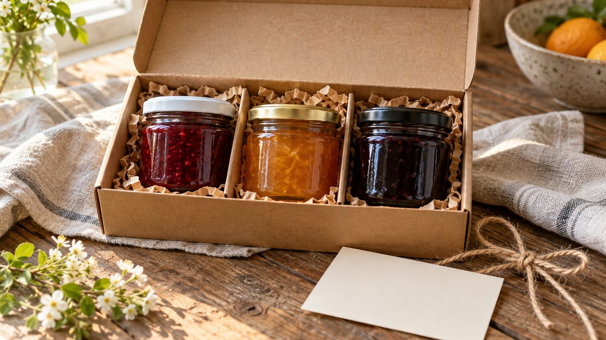

Kit presente de geleia: como montar com vários potinhos

Um pote grande de geleia é um produto. Três potinhos de sabores diferentes, numa caixa com cartão, são um presente. A diferença está na montagem, e dá pra fazer com pouco: o que muda é a escolha dos sabores, a harmonia das tampas e o cuidado na caixa.
Por que kit
O kit resolve duas coisas ao mesmo tempo. Pra quem compra, tira a dúvida do "qual sabor levar": ele leva três. Pra quem vende, vira um produto com apresentação própria, que pede foto própria e pode ter nome. O guia de geleia artesanal da Nuvemshop também aponta que kits e cestas servem como presente em qualquer época do ano, e que lojas com kits presenteáveis foram destaque na Páscoa de 2026.
Escolha os sabores
Comece por um sabor clássico, que quase todo mundo conhece. Entre os mais vendidos de geleia artesanal estão morango, uva, framboesa, amora, pêssego e maçã com canela. Complete com um sabor de fruta mais ácida ou mais regional, que dê contraste de cor e de gosto. O terceiro pode ser o que conta a história da sua marca. Uma boa conta: um que todo mundo reconhece, um que surpreende e um que é a cara de quem faz.
Escolha os potes e as tampas
Pra um kit ficar bonito, os potinhos precisam parecer irmãos. Use o mesmo modelo nos três e jogue com as tampas. A Geleinha 40 ml tem tampa azul, branca, dourada, preta e rosa, além da versão com rolha de cortiça. Uma tampa de cor pra cada sabor ajuda o cliente a reconhecer qual é qual, e uma etiqueta com o nome do sabor termina o trabalho.
Monte a caixa
A medida dos potes define o tamanho da caixa. O pote Geleinha tem 42,5 mm de diâmetro, então três potes lado a lado ocupam cerca de 13 cm de largura, sem contar a folga entre eles e as paredes da caixa. Pra manter tudo no lugar:
- Use divisórias de papel kraft ou papelão, ou um enchimento que encaixe entre os potes.
- Deixe os potes de pé, com a tampa pra cima.
- Coloque o cartão por cima, onde é a primeira coisa que a pessoa vê ao abrir.
O cartão
O cartão é o que faz um kit parecer presente. Pode ter o nome de cada sabor, uma sugestão de uso (pão com manteiga, torrada, queijo) e uma frase curta de quem fez. Não precisa de muito texto.
Se for enviar
Kit com três potes de vidro tem três pontos de quebra. O jeito mais seguro é embalar em camadas, como no caso do mel: cada pote protegido, caixa com enchimento e nada solto dentro. O texto sobre como embalar pote de vidro com mel pra não vazar no transporte explica essas camadas passo a passo e vale pro kit de geleia também.
Quanto cobrar
Faça a conta do kit inteiro: potes, geleia, caixa, enchimento, cartão, fita e o seu tempo de montagem. O preço sai do que o kit custa pra você e do que o seu público está disposto a pagar por presente, não da soma dos potes soltos.
Pra montar o primeiro kit, comece com poucos potes e teste com amigos antes de vender. Quando precisar de mais, veja o catálogo ou fale com a gente pelo WhatsApp.